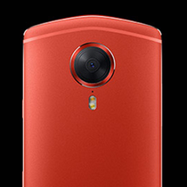
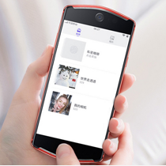
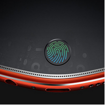

vivo X7搭载骁龙652处理器，拥有4GB RAM+64GB 发个ROM的存储组合，vivo X7拥有超窄边框设计以及首次采用前置指纹识 了支付宝和微信指纹支付功能，但整合了指纹识别模块的Home键看起来与魅族的腰圆键造型比较接近。此外，还有网友在微博上放出了vivo X7的真机谍照，所突出的三大特色仍是超窄边框，高屏占比以及正面指纹识别，据称还会有白色版本推出。 友在微博上放出了vivo X7的真机谍照友在微博上放出了vivo X7的真机谍照友在微博上放出了vivo X7的真机谍照


